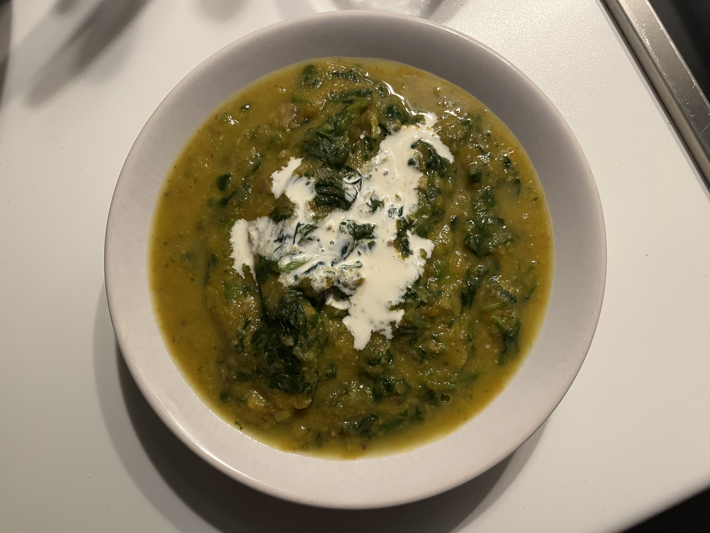

Pumpkin & Sweet Potato Soup

Description:
A very nutritious, high fiber soup, perfect as a side or even main dish.
Ingredients:
- 400g pumpkin (also good frozen chopped one)
- 3 medium sweet potatoes
- chestnuts (cooked and vacuumed)
- 100g spinach
- 30g butter or 3 tbsp. olive oil
- 3 tsp. veggie stock powder
- soy cooking cream
- 1 tsp. salt
Steps:
- Slice the potatoes
- Put together - potatoes, pumpkin, stock, butter and salt in a pot, pour water until all covered
- Let it boil for 10-13min.
- Set away from the fire and pour a coup for 1 person
- Top it up with handful spinach (20g), chestnuts and soy cream
Home